在安卓四大组件中（Activity、Service、BroadCast、ContentProvider），最常用的当是Activity。因为Activity负责提供直观的页面并响应用户操作。在Activity的布局文件中，通过最外层的ViewGroup（布局）一层层嵌套、布局直至View（控件），组成了丰富多彩的用户页面。如QQ、微信等等。在开发这些页面过程中，难免会遇到一些事件冲突（说人话就是：你想点击的某个布局或控件，发现响应的是另一个布局或控件）的问题。呵呵，怎么办呢？由此引入我们接下来讨论的问题。
事件分发阐述
手机在响应用户的点击操作时，从Activity入口，遵循着一定的规则将对应的事件交由指定的ViewGroup或者View去响应（消费这个事件）。只有找出了各中规则，日后再次处理这类事件问题时，必定会得心应手。从程序的角度来看，Android提供三个方法处理事件问题dispatchTouchEvent（分发点击事件）、onInterceptTouchEvent（拦截点击事件），onTouchEvent（处理点击事件）。每个方法返回true或false表示是否处理它对应的职责。比如说，如果我拦截了事件，就表示自身要处理该事件，不让别的控件再能接收到事件信号。除了返回true或false之外，还能通过调用父类的方法执行父类的逻辑。简而言之，Activity、ViewGroup、View三个类处理事件，相关的方法依次是dispatchTouchEvent、onInterceptTouchEvent、onTouchEvent以及每个方法的返回可以是true、false和super。其中注意：Activity和View没有拦截事件方法。
验证
编写一个测试demo，布局文件中用LinearLayout嵌套RelativeLayout，最后在RelativeLayout中包含一个Button按钮。依次在每个事件处理方法中，输出log日志。点击按钮测试，通过日志信息分析事件分发流程。下图是布局效果。
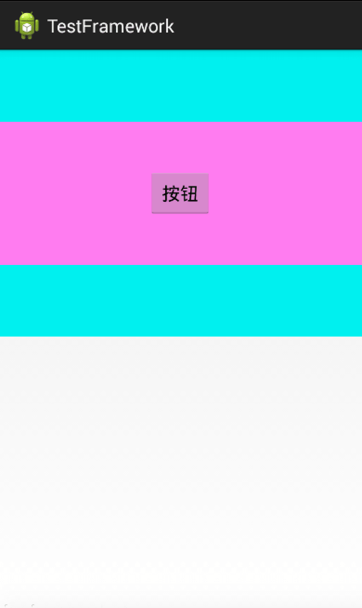
为方便描述，定制命名规则：Activity简写A，LinearLayout简写L，RelativeLayout简写R，Button简写B，dispatchTouchEvent简写D，onInterceptTouchEvent简写I，onTouchEvent简写T，返回true简写T，返回false简写F，返回super简写S。如：ADS表示Activity中dispatchTouchEvent方法 return super。
测试方案一
ADS/ATS、LDS/LIS/LTS、RDS/RIS/RTS、BDS/BTS
日志说明
1
2
3
4
5
6
7
8
9
10
11
12
13
14
15
| 04-01 12:44:44.402: D/Activity(1234): dispatchTouchEvent ACTION_DOWN
04-01 12:44:44.402: D/MyLinearLayout(1234): dispatchTouchEvent ACTION_DOWN
04-01 12:44:44.402: D/MyLinearLayout(1234): onInterceptTouchEvent ACTION_DOWN
04-01 12:44:44.402: D/MyRelativeLayout(1234): dispatchTouchEvent ACTION_DOWN
04-01 12:44:44.402: D/MyRelativeLayout(1234): onInterceptTouchEvent ACTION_DOWN
04-01 12:44:44.402: D/MyButton(1234): dispatchTouchEvent ACTION_DOWN
04-01 12:44:44.402: D/MyButton(1234): onTouchEvent ACTION_DOWN
04-01 12:44:44.506: D/Activity(1234): dispatchTouchEvent ACTION_UP
04-01 12:44:44.506: D/MyLinearLayout(1234): dispatchTouchEvent ACTION_UP
04-01 12:44:44.506: D/MyLinearLayout(1234): onInterceptTouchEvent ACTION_UP
04-01 12:44:44.506: D/MyRelativeLayout(1234): dispatchTouchEvent ACTION_UP
04-01 12:44:44.506: D/MyRelativeLayout(1234): onInterceptTouchEvent ACTION_UP
04-01 12:44:44.506: D/MyButton(1234): dispatchTouchEvent ACTION_UP
04-01 12:44:44.506: D/MyButton(1234): onTouchEvent ACTION_UP
04-01 12:44:44.506: D/Button(1234): 点击
|
整理出如下示意图：三色箭头实线，表示对应方法返回一个值会跳转到下一个方法。其中Button 返回true和返回super都会消费事件，只是返回true就不在就不再响应button的点击事件。
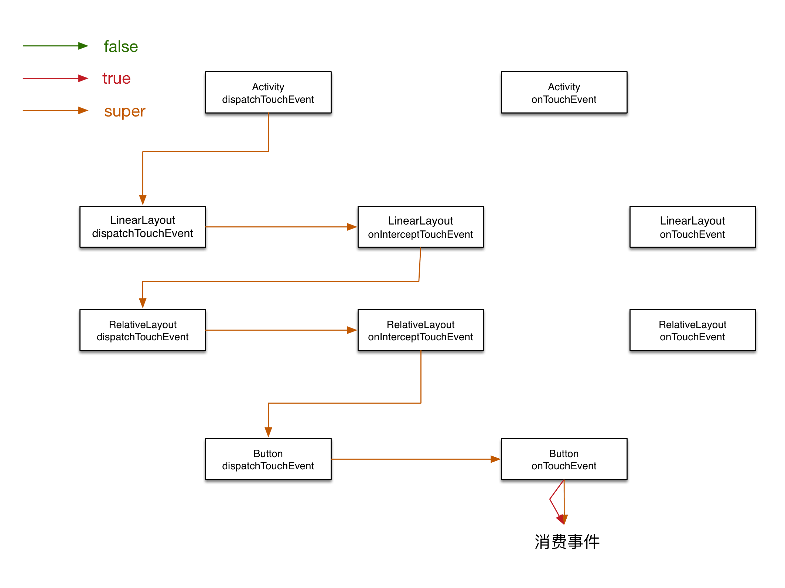
测试方案二
ADS/ATS、LDS/LIS/LTS、RDS/RIS/RTS、BDS/BTF
日志说明
1
2
3
4
5
6
7
8
9
10
11
12
| 04-01 14:00:54.970: D/Activity(1387): dispatchTouchEvent ACTION_DOWN
04-01 14:00:54.970: D/MyLinearLayout(1387): dispatchTouchEvent ACTION_DOWN
04-01 14:00:54.970: D/MyLinearLayout(1387): onInterceptTouchEvent ACTION_DOWN
04-01 14:00:54.970: D/MyRelativeLayout(1387): dispatchTouchEvent ACTION_DOWN
04-01 14:00:54.970: D/MyRelativeLayout(1387): onInterceptTouchEvent ACTION_DOWN
04-01 14:00:54.970: D/MyButton(1387): dispatchTouchEvent ACTION_DOWN
04-01 14:00:54.970: D/MyButton(1387): onTouchEvent ACTION_DOWN
04-01 14:00:54.970: D/MyRelativeLayout(1387): onTouchEvent ACTION_DOWN
04-01 14:00:54.970: D/MyLinearLayout(1387): onTouchEvent ACTION_DOWN
04-01 14:00:54.970: D/Activity(1387): onTouchEvent ACTION_DOWN
04-01 14:00:55.066: D/Activity(1387): dispatchTouchEvent ACTION_UP
04-01 14:00:55.066: D/Activity(1387): onTouchEvent ACTION_UP
|
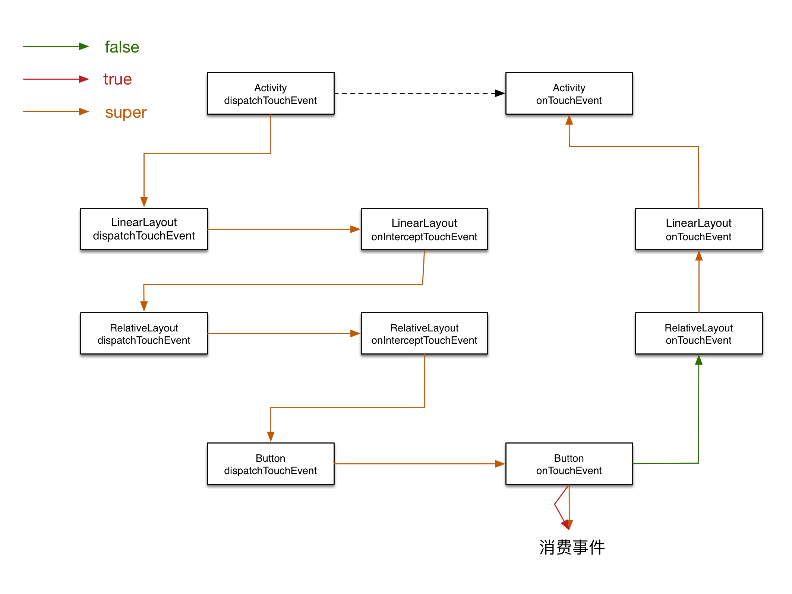
说明：Button 的onTouchEvent return false时，点击事件会返回到上一层视图。如果一直都没有控件处理这个事件就会交给Activitiy 的onTouchEvent消费。当再传入事件时，不会再按照之前的流程，每个空间均处理一次，而是直接给 Activity 的onTouchEvent消费。就是虚线所指。
测试方案三
ADS/ATS、LDS/LIS/LTS、RDS/RIS/RTS、BDT/BTF
日志说明
1
2
3
4
5
6
7
8
9
10
11
12
| 04-01 14:12:47.918: D/Activity(1444): dispatchTouchEvent ACTION_DOWN
04-01 14:12:47.918: D/MyLinearLayout(1444): dispatchTouchEvent ACTION_DOWN
04-01 14:12:47.918: D/MyLinearLayout(1444): onInterceptTouchEvent ACTION_DOWN
04-01 14:12:47.918: D/MyRelativeLayout(1444): dispatchTouchEvent ACTION_DOWN
04-01 14:12:47.918: D/MyRelativeLayout(1444): onInterceptTouchEvent ACTION_DOWN
04-01 14:12:47.918: D/MyButton(1444): dispatchTouchEvent ACTION_DOWN
04-01 14:12:48.030: D/Activity(1444): dispatchTouchEvent ACTION_UP
04-01 14:12:48.030: D/MyLinearLayout(1444): dispatchTouchEvent ACTION_UP
04-01 14:12:48.030: D/MyLinearLayout(1444): onInterceptTouchEvent ACTION_UP
04-01 14:12:48.030: D/MyRelativeLayout(1444): dispatchTouchEvent ACTION_UP
04-01 14:12:48.030: D/MyRelativeLayout(1444): onInterceptTouchEvent ACTION_UP
04-01 14:12:48.030: D/MyButton(1444): dispatchTouchEvent ACTION_UP
|
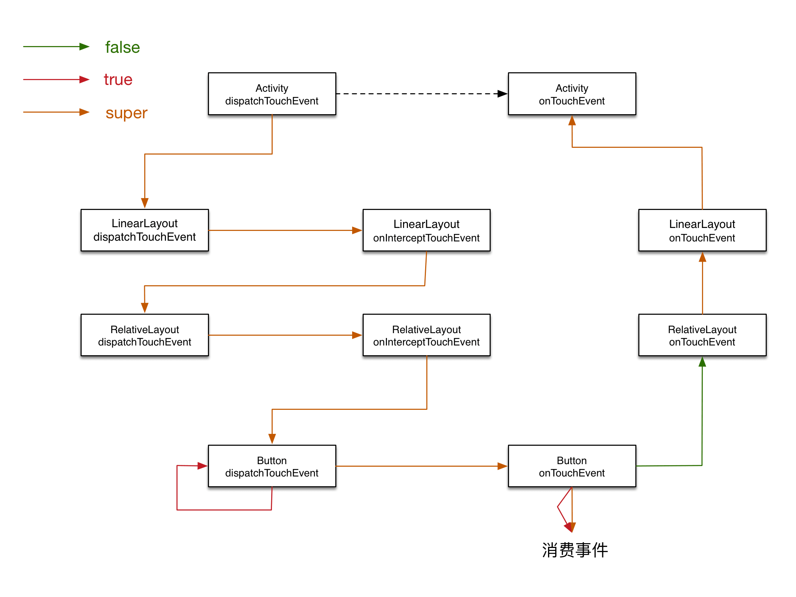
说明：Button dispatchTouchEvent方法返回true，表示自身需要消费该事件。且不传递给onTouchEvent方法。
测试方案四
ADS/ATS、LDS/LIS/LTS、RDS/RIS/RTS、BDF/BTF
日志说明
1
2
3
4
5
6
7
8
9
10
11
| 04-01 14:19:40.014: D/Activity(1502): dispatchTouchEvent ACTION_DOWN
04-01 14:19:40.014: D/MyLinearLayout(1502): dispatchTouchEvent ACTION_DOWN
04-01 14:19:40.014: D/MyLinearLayout(1502): onInterceptTouchEvent ACTION_DOWN
04-01 14:19:40.014: D/MyRelativeLayout(1502): dispatchTouchEvent ACTION_DOWN
04-01 14:19:40.014: D/MyRelativeLayout(1502): onInterceptTouchEvent ACTION_DOWN
04-01 14:19:40.014: D/MyButton(1502): dispatchTouchEvent ACTION_DOWN
04-01 14:19:40.014: D/MyRelativeLayout(1502): onTouchEvent ACTION_DOWN
04-01 14:19:40.014: D/MyLinearLayout(1502): onTouchEvent ACTION_DOWN
04-01 14:19:40.014: D/Activity(1502): onTouchEvent ACTION_DOWN
04-01 14:19:40.022: D/Activity(1502): dispatchTouchEvent ACTION_UP
04-01 14:19:40.022: D/Activity(1502): onTouchEvent ACTION_UP
|
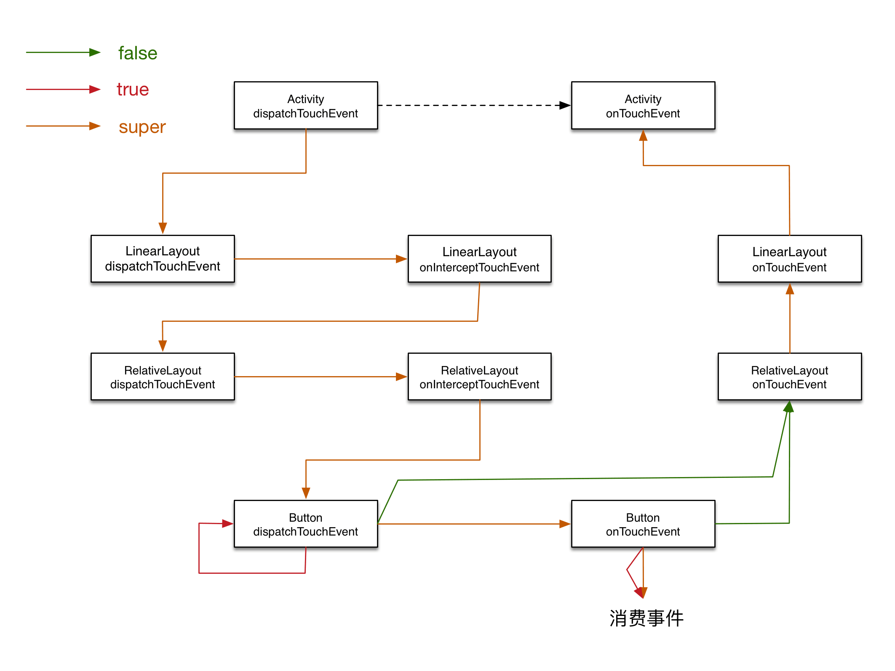
说明：Button dispatchTouchEvent方法返回false，事件传递给父控件onTouchEvent方法。
测试方案五
ADS/ATS、LDS/LIS/LTS、RDS/RIS/RTT、BDF/BTF
日志说明
1
2
3
4
5
6
7
8
9
10
11
12
| 04-01 14:26:03.306: D/Activity(1561): dispatchTouchEvent ACTION_DOWN
04-01 14:26:03.306: D/MyLinearLayout(1561): dispatchTouchEvent ACTION_DOWN
04-01 14:26:03.306: D/MyLinearLayout(1561): onInterceptTouchEvent ACTION_DOWN
04-01 14:26:03.306: D/MyRelativeLayout(1561): dispatchTouchEvent ACTION_DOWN
04-01 14:26:03.306: D/MyRelativeLayout(1561): onInterceptTouchEvent ACTION_DOWN
04-01 14:26:03.306: D/MyButton(1561): dispatchTouchEvent ACTION_DOWN
04-01 14:26:03.306: D/MyRelativeLayout(1561): onTouchEvent ACTION_DOWN
04-01 14:26:03.366: D/Activity(1561): dispatchTouchEvent ACTION_UP
04-01 14:26:03.366: D/MyLinearLayout(1561): dispatchTouchEvent ACTION_UP
04-01 14:26:03.366: D/MyLinearLayout(1561): onInterceptTouchEvent ACTION_UP
04-01 14:26:03.366: D/MyRelativeLayout(1561): dispatchTouchEvent ACTION_UP
04-01 14:26:03.366: D/MyRelativeLayout(1561): onTouchEvent ACTION_UP
|
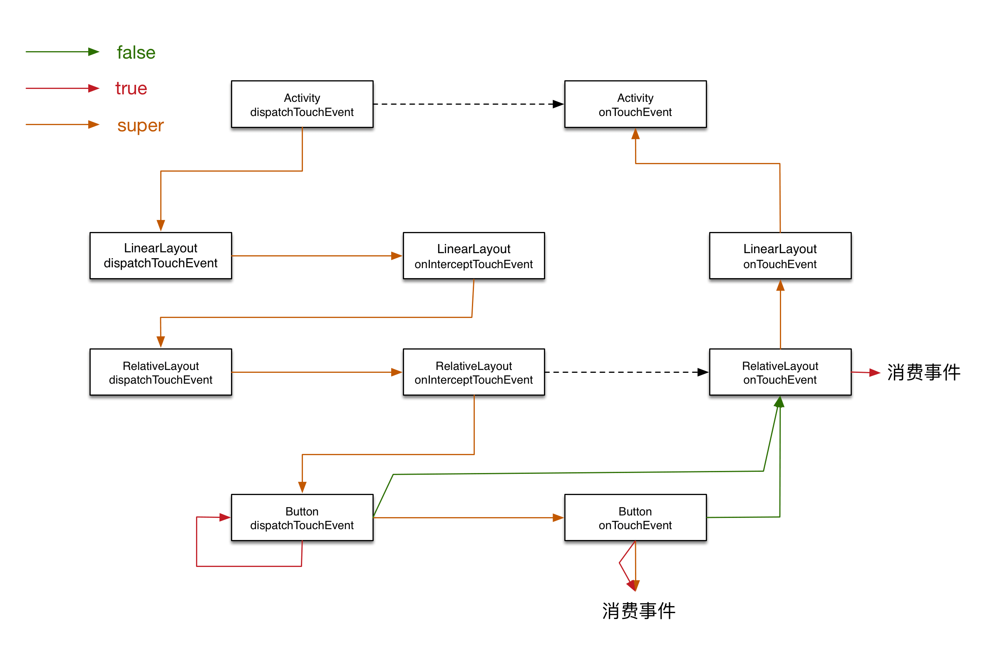
说明：RelativeLayout 的onTouchEvent方法return true 消费了事件，下次事件生成时，就不传递给Button，直接交由RelativeLayout 的onTouchEvent方法处理。
测试方案六
ADS/ATS、LDS/LIS/LTS、RDS/RIS/RTF、BDF/BTF
日志说明
1
2
3
4
5
6
7
8
9
10
11
| 04-01 14:39:20.794: D/Activity(1644): dispatchTouchEvent ACTION_DOWN
04-01 14:39:20.798: D/MyLinearLayout(1644): dispatchTouchEvent ACTION_DOWN
04-01 14:39:20.798: D/MyLinearLayout(1644): onInterceptTouchEvent ACTION_DOWN
04-01 14:39:20.798: D/MyRelativeLayout(1644): dispatchTouchEvent ACTION_DOWN
04-01 14:39:20.798: D/MyRelativeLayout(1644): onInterceptTouchEvent ACTION_DOWN
04-01 14:39:20.798: D/MyButton(1644): dispatchTouchEvent ACTION_DOWN
04-01 14:39:20.798: D/MyRelativeLayout(1644): onTouchEvent ACTION_DOWN
04-01 14:39:20.798: D/MyLinearLayout(1644): onTouchEvent ACTION_DOWN
04-01 14:39:20.798: D/Activity(1644): onTouchEvent ACTION_DOWN
04-01 14:39:20.874: D/Activity(1644): dispatchTouchEvent ACTION_UP
04-01 14:39:20.874: D/Activity(1644): onTouchEvent ACTION_UP
|
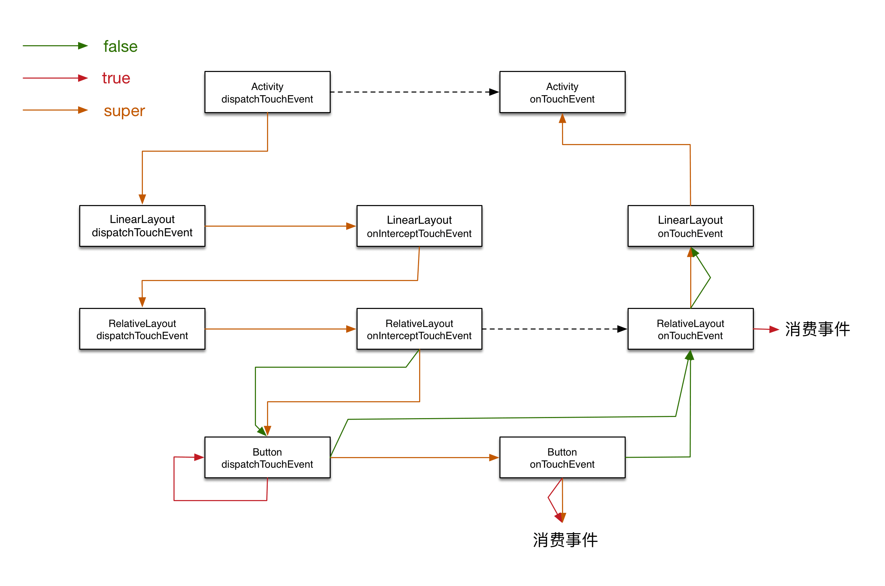
说明：RelativeLayout return false，就会将事件传递到上一层控件消费。其中，RelativeLayout onInterceptTouchEvent return false 表示事件也会分发到Button处理。
测试方案七
ADS/ATS、LDS/LIS/LTS、RDS/RIT/RTF、BDF/BTF
日志说明
1
2
3
4
5
6
7
8
9
10
| 04-01 15:02:41.594: D/Activity(1739): dispatchTouchEvent ACTION_DOWN
04-01 15:02:41.594: D/MyLinearLayout(1739): dispatchTouchEvent ACTION_DOWN
04-01 15:02:41.594: D/MyLinearLayout(1739): onInterceptTouchEvent ACTION_DOWN
04-01 15:02:41.594: D/MyRelativeLayout(1739): dispatchTouchEvent ACTION_DOWN
04-01 15:02:41.594: D/MyRelativeLayout(1739): onInterceptTouchEvent ACTION_DOWN
04-01 15:02:41.594: D/MyRelativeLayout(1739): onTouchEvent ACTION_DOWN
04-01 15:02:41.594: D/MyLinearLayout(1739): onTouchEvent ACTION_DOWN
04-01 15:02:41.594: D/Activity(1739): onTouchEvent ACTION_DOWN
04-01 15:02:41.714: D/Activity(1739): dispatchTouchEvent ACTION_UP
04-01 15:02:41.714: D/Activity(1739): onTouchEvent ACTION_UP
|
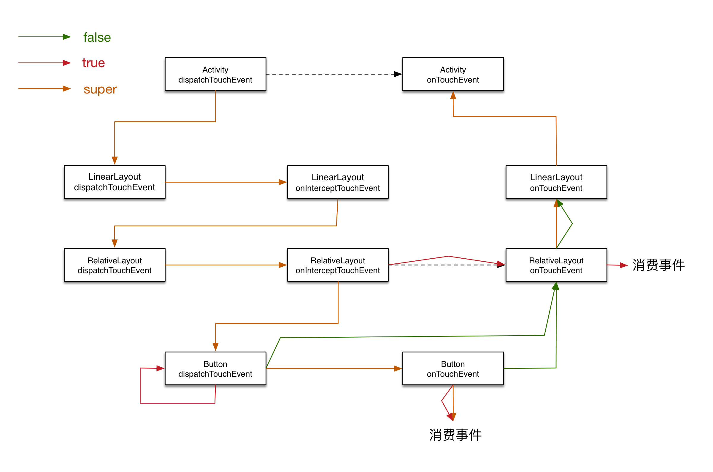
说明：RelativeLayout onInterceptTouchEvent 返回true，表示RelativeLayout 拦截事件信息，Button不会响应事件，事件交由RelativeLayout onTouchEvent处理。
测试方案八
ADS/ATS、LDS/LIS/LTS、RDT/RIT/RTF、BDF/BTF
日志说明
1
2
3
4
5
6
7
8
| 04-01 15:27:17.002: D/Activity(1907): dispatchTouchEvent ACTION_DOWN
04-01 15:27:17.002: D/MyLinearLayout(1907): dispatchTouchEvent ACTION_DOWN
04-01 15:27:17.002: D/MyLinearLayout(1907): onInterceptTouchEvent ACTION_DOWN
04-01 15:27:17.002: D/MyRelativeLayout(1907): dispatchTouchEvent ACTION_DOWN
04-01 15:27:17.058: D/Activity(1907): dispatchTouchEvent ACTION_UP
04-01 15:27:17.058: D/MyLinearLayout(1907): dispatchTouchEvent ACTION_UP
04-01 15:27:17.058: D/MyLinearLayout(1907): onInterceptTouchEvent ACTION_UP
04-01 15:27:17.058: D/MyRelativeLayout(1907): dispatchTouchEvent ACTION_UP
|
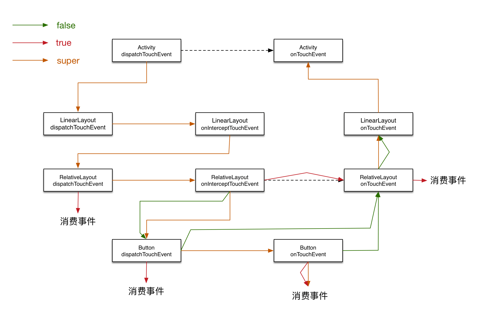
说明：RelativeLayout dispatchTouchEvent return true 表示自己消费事件，不再进行传递
测试方案九
ADS/ATS、LDS/LIS/LTS、RDF/RIT/RTF、BDF/BTF
日志说明
1
2
3
4
5
6
7
8
| 04-01 15:32:12.138: D/Activity(1965): dispatchTouchEvent ACTION_DOWN
04-01 15:32:12.138: D/MyLinearLayout(1965): dispatchTouchEvent ACTION_DOWN
04-01 15:32:12.138: D/MyLinearLayout(1965): onInterceptTouchEvent ACTION_DOWN
04-01 15:32:12.138: D/MyRelativeLayout(1965): dispatchTouchEvent ACTION_DOWN
04-01 15:32:12.138: D/MyLinearLayout(1965): onTouchEvent ACTION_DOWN
04-01 15:32:12.138: D/Activity(1965): onTouchEvent ACTION_DOWN
04-01 15:32:12.250: D/Activity(1965): dispatchTouchEvent ACTION_UP
04-01 15:32:12.250: D/Activity(1965): onTouchEvent ACTION_UP
|
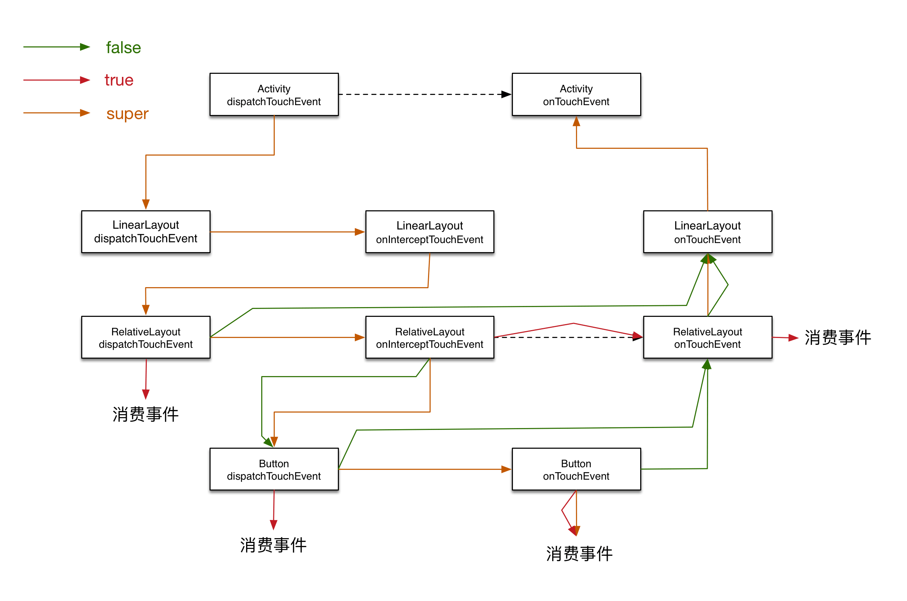
说明：RelativeLayout dispatchTouchEvent return false 表示不处理事件，交给上层页面处理。
测试方案十
ADT/ATS、LDS/LIS/LTS、RDF/RIT/RTF、BDF/BTF
日志说明
1
2
| 04-01 15:43:24.558: D/Activity(2023): dispatchTouchEvent ACTION_DOWN
04-01 15:43:24.686: D/Activity(2023): dispatchTouchEvent ACTION_UP
|
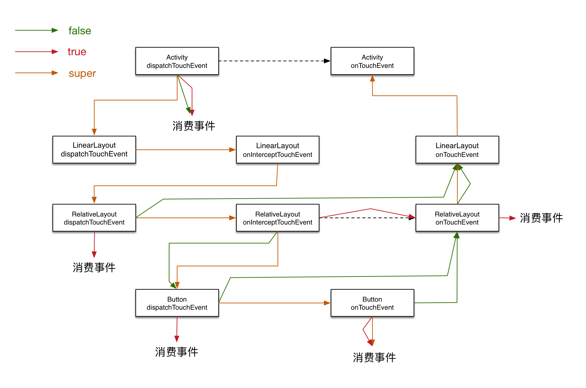
说明：同ViewGroup和View的 dispatchTouchEvent 方法一样，return true 表示自己消费事件。不同的是，Activity 的dispatchTouchEvent方法return false 也表示自己消费事件。
测试方案十一
ADS/ATS、LDS/LIS/LTS、RDF/RIT/RTF、BDF/BTF
日志说明
1
2
3
4
5
6
7
8
| 04-01 15:56:51.486: D/Activity(2149): dispatchTouchEvent ACTION_DOWN
04-01 15:56:51.486: D/MyLinearLayout(2149): dispatchTouchEvent ACTION_DOWN
04-01 15:56:51.486: D/MyLinearLayout(2149): onInterceptTouchEvent ACTION_DOWN
04-01 15:56:51.486: D/MyRelativeLayout(2149): dispatchTouchEvent ACTION_DOWN
04-01 15:56:51.486: D/MyLinearLayout(2149): onTouchEvent ACTION_DOWN
04-01 15:56:51.486: D/Activity(2149): onTouchEvent ACTION_DOWN
04-01 15:56:51.490: D/Activity(2149): dispatchTouchEvent ACTION_UP
04-01 15:56:51.490: D/Activity(2149): onTouchEvent ACTION_UP
|
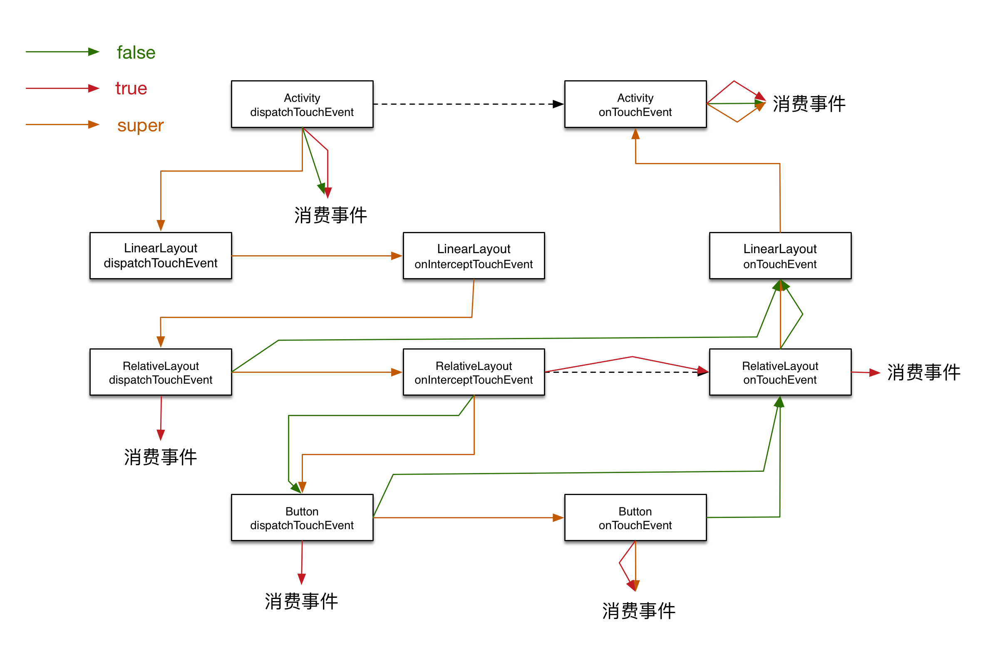
说明：其实，最终只要传递到Activity的onTouchEvent 方法，都会交由它处理事件。
参照之前理解的思路，将整个示意图完善如下：
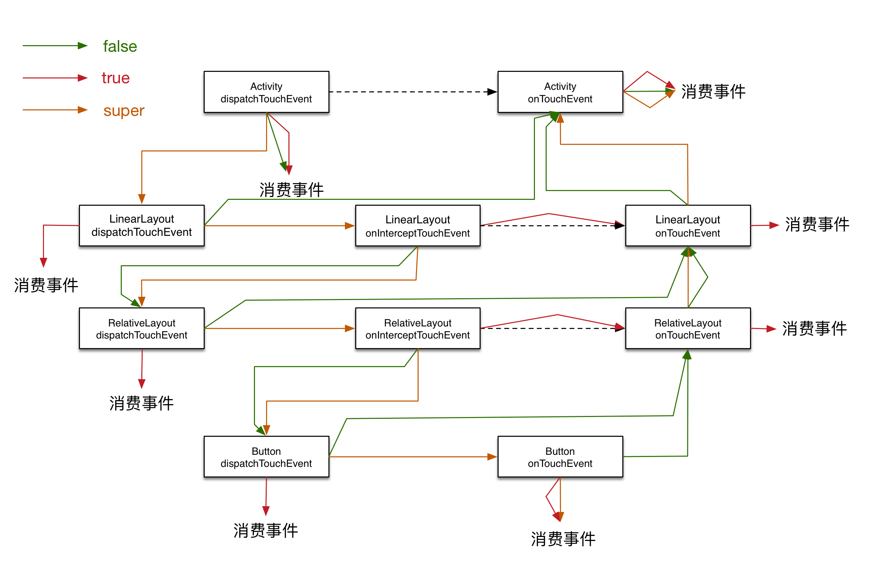
总结
Activity的dispatchTouchEvent方法，执行父类dispatchTouchEvent方法时，会将事件分发至ViewGroup，否则自身消费事件。- 当事件再次传递到
Activity的onTouchEvent方法，表示页面中所有控件都不响应事件，由Activity处理。
ViewGroup和View的dispatchTouchEvent方法，return true表示不分发事件，自身处理。return false就将事件传递给上层控件的onTouchEvent方法，并且不再响应上层控件传递过来的事件。ViewGroup的onInterceptTouchEvent方法return true表示拦截事件，将事件传递给自身的onTouchEvent方法处理。View的onTouchEvent方法return false表示不消费事件，将事件传递给上层控件的onTouchEvent方法。否则，消费事件。ViewGroup的onTouchEvent方法return true表示消费事件，否则将事件传递给上层控件或Activity的onTouchEvent方法处理。- 当控件没有处理事件时，就不再接收下一个事件消息，虚线所示。
最后，祝各位程序猿/媛、码农、攻城狮们愚人节快乐。